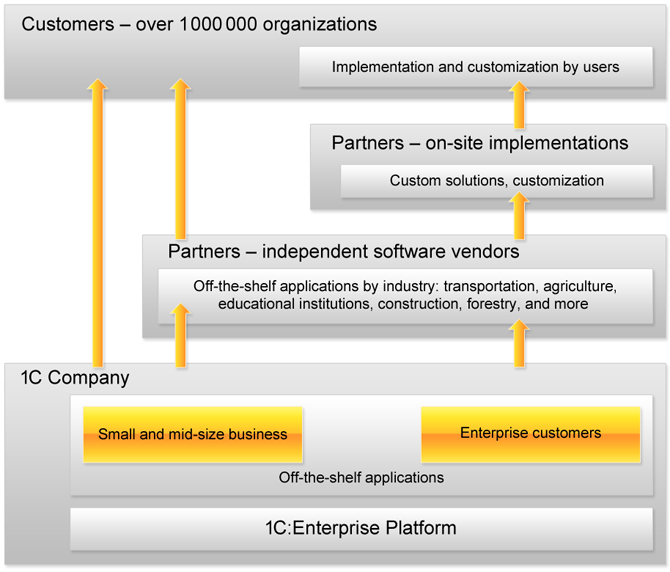

1C:Enterprise is a universal cloud and on-premise system of programs for automating a company’s financial and wider operational activities. 1C:Enterprise has the breadth of capability to address the diverse needs of today’s business. This is achieved through "configurability" – the ability to customize the system based on the specific needs of companies and their business processes.
1C:Enterprise is more than just a solution automating fixed business rules. Rather it is a suite of software tools employed by developers and users. The system can be logically divided into two major components that are closely interrelated: an application and the platform on which the application runs.
Notes:
Watch a short video tutorial on how to develop a business application using 1C:Enterprise Platform.
Try an online demo-version of a sample application built on 1C:Enterprise
Get started with creating a first business application using 1C:Enterprise Platform.
To explain the relationship between the system components of 1C:Enterprise, we compare it to a Blu-ray player. It is well known that a player is required for watching videos, listening to music, or playing other media content. The Blue-ray is standard but it meets the wide variety of customer needs through the range of discs out there with video or music to suit any taste.
To watch a video, you need to put a Blu-ray disc into a player, and the player will reproduce the content (video) that is recorded on it. In addition, Blu-ray players let you record your own content, i.e., create a new Blu-ray disc with a home video.
On its own, the player is useless without a Blu-ray disc, and likewise, a Blu-ray disc is useless without a player (except perhaps as a coaster for your coffee cup). Getting back to 1C:Enterprise, we can say that the platform is a type of "player", and an application is a "disc". The platform allows you to run the application, as well as modify it or create a new one. There is a single platform (1C:Enterprise 8), but an unlimited number of applications can be created. To run an application, you always need to have both the platform and the application itself (see the diagram above). The platform does not perform any automation tasks on its own, since its purpose is to provide the environment for developing and running applications. The same is also true for an application: it needs 1C:Enterprise Platform to run.
Watch a short video tutorial on how to develop a business application using 1C:Enterprise Platform.
Try an online demo-version of a sample application built on 1C:Enterprise
Get started with creating a first business application using 1C:Enterprise Platform.
To explain the relationship between the system components of 1C:Enterprise, we compare it to a Blu-ray player. It is well known that a player is required for watching videos, listening to music, or playing other media content. The Blue-ray is standard but it meets the wide variety of customer needs through the range of discs out there with video or music to suit any taste.
To watch a video, you need to put a Blu-ray disc into a player, and the player will reproduce the content (video) that is recorded on it. In addition, Blu-ray players let you record your own content, i.e., create a new Blu-ray disc with a home video.
On its own, the player is useless without a Blu-ray disc, and likewise, a Blu-ray disc is useless without a player (except perhaps as a coaster for your coffee cup). Getting back to 1C:Enterprise, we can say that the platform is a type of "player", and an application is a "disc". The platform allows you to run the application, as well as modify it or create a new one. There is a single platform (1C:Enterprise 8), but an unlimited number of applications can be created. To run an application, you always need to have both the platform and the application itself (see the diagram above). The platform does not perform any automation tasks on its own, since its purpose is to provide the environment for developing and running applications. The same is also true for an application: it needs 1C:Enterprise Platform to run.
1C:Enterprise Platform offers the following advantages:
The 1C:Enterprise application system is daily used by several million users in business and government to automate operations, accounting, finance, HR, and management activities. 1C Company provides an array of vertical solutions for manufacturing, distribution, and service businesses. With its innovative technological platform and the array of applied solutions, 1C Company has achieved wide popularity for its openness, speed of modification and software updates. 1C:Enterprise is a very flexible and scalable platform meeting the needs of companies ranging in size from a single user to hundreds of users.
1C:Enterprise is a system of applications that includes the Platform and Applied Solutions (off-the-shelf applications).
The difference between the platform and the applied solutions is simple: the platform, as its name suggests, supports all of the applied solutions. The platform essentially stands alone, whereas there are many applied solutions. 1C Company and their partners are constantly introducing new applied solutions.
The benefit of having such a platform is to raise the abstract level of a software system. The platform handles all of the tasks related to technological complexity, performance, ergonomics, and so on.
1C:Enterprise allows you to do the following:
1C:Enterprise Platform consists of the following parts:
The above diagram of a business application shows usage examples for:
Using the Business Components significantly reduces the cost of enterprise application development, since it allows the company to focus on implementation of its specific business processes only, instead of building basic business functionality from scratch.

The following table summarizes technologies and tools included in 1C:Enterprise.